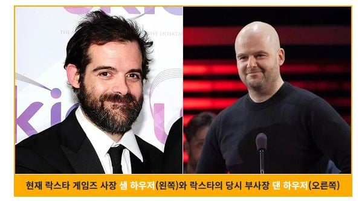
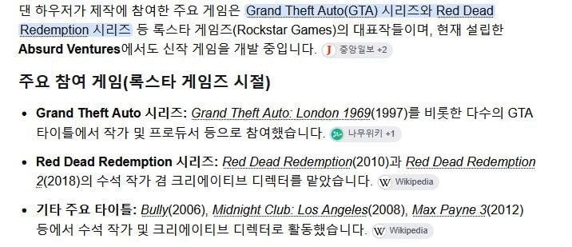
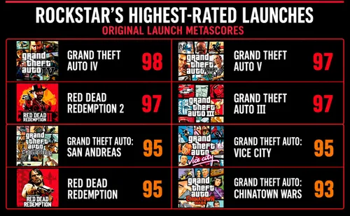
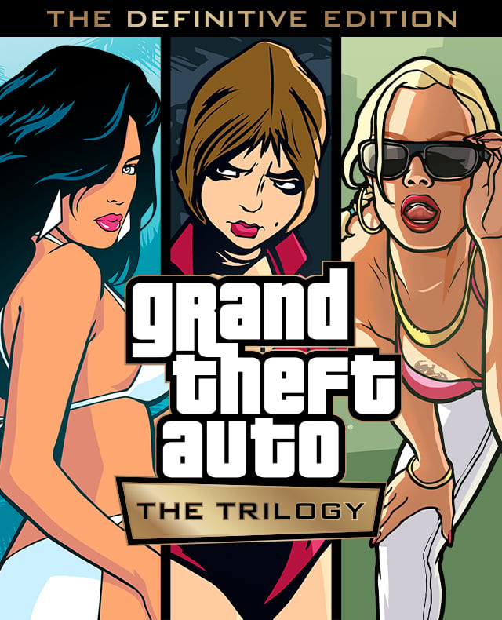
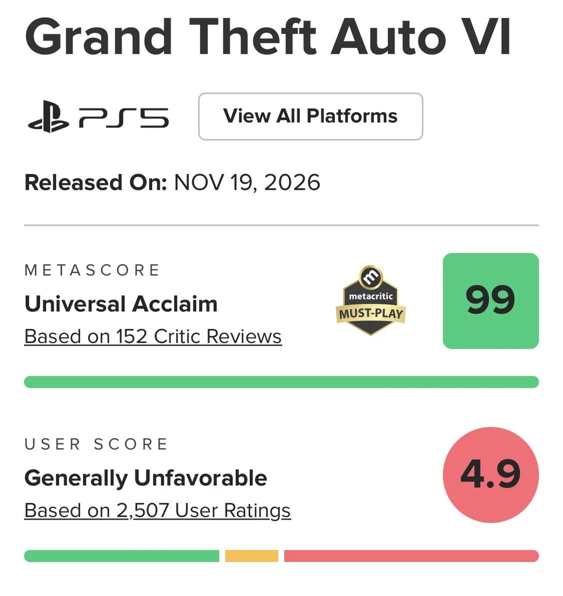
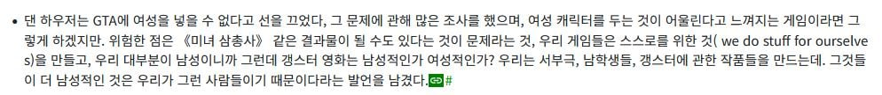

락스타 게임즈는 샘 하우저 - 댄 하우저 형제가 핵심이었던 회사로
동생인 댄 하우저는 주로 게임의 스토리라인 총괄을 맡았었음


댄 하우저는 GTA3, 바이스시티, 산안드레스, 4, 5
개붕이들이 사랑하는 레데리 시리즈 등의 스토리 책임자로
락스타 황금기를 이끌어왔음
락스타 황금기의 스토리라인들은 대부분 댄 하우저와 라즐로우 등의 작품이었음
그러던중 댄 하우저는 2020년대 초반에 락스타를 퇴사하고
락스타에서의 댄하우저의 마지막 유산은 레드데드리뎀션2가 됨

동생 댄 하우저 퇴사 이후,
락스타 샘 하우저 단독 체제에서의 첫 작품은 GTA 트릴로지였고
모두가 알다싶이 나오자마자 개욕쳐먹고 평가 좆박았음

이후 샘하우저 체제의 두번째 작품인 GTA6는 평론계의 엄청난 호평을 받지만
유저스코어는 여친심부름 하기 등으로 개좆박고 있음

댄 하우저는 GTA 시리즈에 여성주인공이 있을 수 없다고 했었는데
그러한 댄 하우저가 나가고 나온 첫 신규개발작에서 스토리 평가가 개좆박고 있는 부분은 흥미로운 부분
실제 겜 하는 사람이 평가하는거지 평론가는 진짜 그냥 패션게이머들 같음